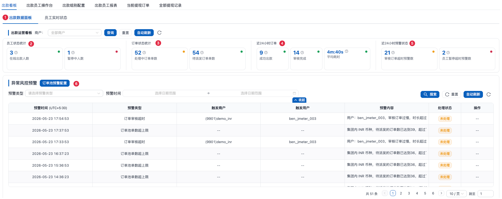
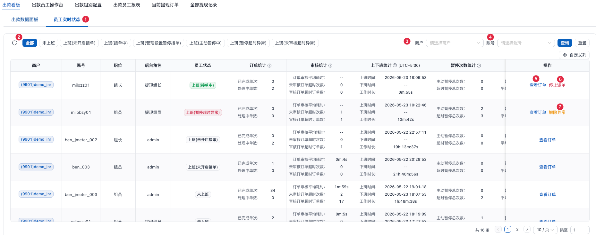
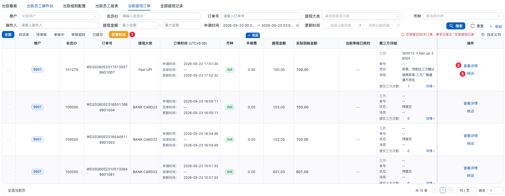
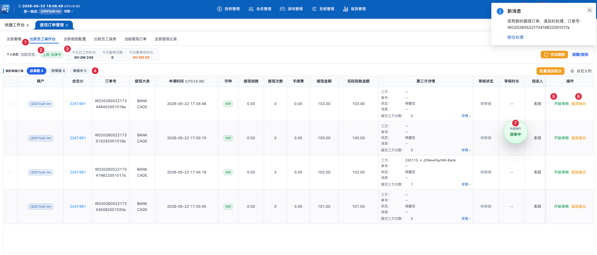
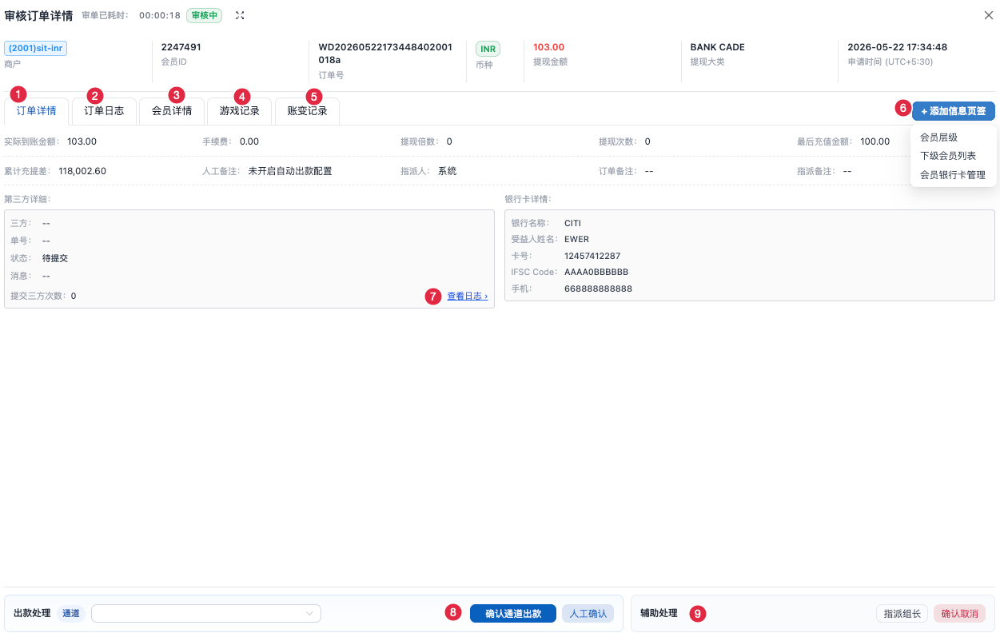

| 你的 3 大核心职责 |
|---|
| ① 监控本组员工状态：通过员工实时状态看每个组员的单量、暂停、超时情况 |
| ② 调控员工接单：积压员工 → 点【停止派单】或把订单转派给空闲员工；空闲员工 → 让他【开始派单】或转派单子给他 |
| ③ 处理组员转派给你的异常单：组员遇到大单 / 风控 / 资料疑问会转派给你，你处理 |
📍 路径：财务管理 → 提现订单管理 → 出款看板 → 出款数据面板

| 标 | 区域 / 按钮 | 指标 | 统计范围 |
|---|---|---|---|
| 1 | 出款数据面板 Tab | 切换"出款数据面板 / 员工实时状态" | — |
| 2 | 员工状态统计 | 在线出款人数 · 暂停中人数 ⭐ 点击卡片跳转员工实时状态 | 本组员工 |
| 3 | 订单状态统计 | 处理中订单单数 · 待派发订单单数 | 按归属商户看全部 （顶部"商户"下拉控制，默认全部） |
| 4 | 近 24 小时订单 | 成功出款 · 审核完成 · 平均耗时（如 0m:6s） | |
| 5 | 近 24 小时预警状态 | 审核订单超时预警数 · 员工暂停超时预警数 | |
| 6 | 订单池预警配置 | 异常风控预警区顶部按钮 → 配置预警阈值 | — |
📍 路径：财务管理 → 提现订单管理 → 出款看板 → 员工实时状态

标 1 员工实时状态 Tab（与出款数据面板平级）· 标 3 商户筛选 · 标 4 账号筛选 · 标 2 / 5 / 6 / 7 详见下方
| Tab 文案 | 含义 | 调控动作 |
|---|---|---|
| 全部 | 本组所有员工总览 | — |
| 未上班 | 今天未打卡 / 已下班的人 | — |
| 🟢 上班(未开启接单) | 空闲员工，已打卡未点【开始派单】 | 提醒【开始派单】或转派单给他 |
| 上班(接单中) | 正常接单中 | 积压 → 【停止派单】+ 转单 |
| 上班(管理设置暂停接单) | 被管理员叫停 | 【开始派单】恢复 |
| 上班(主动暂停中) | 员工自己点的暂停 | 等他自己恢复 |
| 🔴 上班(暂停超时异常) | 暂停超组别配置时长，被系统标异常 | 【解除异常】 |
| 🔴 上班(未审核超时异常) | 订单长时间未审核，被系统标异常 | 【解除异常】 |
| 标 | 按钮 | 出现条件 | 作用 |
|---|---|---|---|
| 5 | 【查看订单】 | 所有状态（始终显示） | 查看该员工手上的订单 |
| 6 | 【停止派单】/【开始派单】 | 停止：接单中且积压 开始：管理设置暂停接单 | 停止：手上单不影响，不再派新单 开始：让被叫停员工重新接单 |
| 7 | 🔴【解除异常】 | 暂停超时异常 / 未审核超时异常 | 员工从异常状态恢复 |
📍 路径：财务管理 → 提现订单管理 → 当前提现订单

| 标 | 操作 | 位置 | 用途 |
|---|---|---|---|
| 1 | 【批量转派】 | 顶部工具栏（先勾选） | 积压员工的一批订单一次性转给空闲员工 |
| 2 | 【查看详情】 | 每行操作列 | 看订单完整信息 + 审核日志 |
| 3 | 【转派】 | 每行操作列 | 把这一单从原员工转给另一个员工 |
| 你的工作特点 |
|---|
| ✅ 浮窗【开始派单】后，系统自动派多商户订单（你授权出款的所有商户） |
| ✅ 订单列表会出现不同商户的订单（"商户"列显示来源） |
| ✅ 顶部商户可切换，用于查看不同商户的历史 / 报表 / 当前订单池 |
| ⚠️ 切换商户 = 全页刷新，操作台不受影响，但其他页面会重新加载 |
📑 顶部状态栏（商户切换 + 时区 + 角标）
📑 1 · 出款员工操作台详解（主战场）
📑 2 · 充值订单管理
📑 3 · FAQ + 状态速查 + 入口速记
| 你的优势 |
|---|
| ✅ 顶部商户字段灰色禁用（固定一个商户），不会切错 |
| ✅ 不存在"切换商户丢失操作"的问题 |
| ✅ 所有订单都在同一个商户，不需要分辨 |
| ✅ 时区固定，对账方便 |
| 你做不到的事（要找谁） |
|---|
| ❌ 看不到其他商户的订单 → 跨商户问题找组长 |
| ❌ 看不到出款数据面板 + 出款组别配置 + 当前提现订单 → 那是组长的菜单 |
| ❌ 不能恢复自己的"异常暂停" → 必须找组长 / 管理员【解除异常】 |
| ❌ 指派出去的订单找不回 → 要组长再转回来 |
📑 1 · 出款员工操作台详解（你的主战场，必看）
📑 2 · 充值订单管理
📑 3 · FAQ + 状态速查 + 入口速记
📍 路径：财务管理 → 提现订单管理 → 出款员工操作台

| 标 | 区域 / 按钮 | 说明 |
|---|---|---|
| 1 | 出款员工操作台 Tab | 当前页签，与"出款看板 / 当前提现订单 / 全部提现记录" 等平级 |
| 2 | 个人状态 | 显示当前状态徽章（如 上班-派单中），与右下角浮窗联动 |
| 3 | 顶部统计卡片 | 今日已工作时长 · 今日暂停次数 · 今日暂停总时长 + 【手动刷新】【提醒/规则】 |
| 4 | Pills 过滤 | 总单数 X · 待审核 X · 审核中 X — 点击切换列表 |
| 5 | 行操作 【开始审核】 | 待审核状态显示；点击开始审核计时 |
| 6 | 行操作 【指派组长】 | 遇到大单 / 风控 / 资料疑问 → 转给组长处理 |
| 7 | 右下角浮窗（派单中） | 状态切换主入口：上班 / 开始派单 / 暂停 / 下班（可拖拽，位置自动记忆） |
| 概念 | 在哪儿配 | 控制什么 |
|---|---|---|
| 归属商户（基础配置） | 系统用户管理 → 公用配置 → 归属商户 | 你能登录访问哪些商户的数据（顶部下拉的范围） |
| 授权出款商户（出款权限） | 系统用户管理 → 编辑 → 出款权限 → 授权可出款的商户 | 系统派哪些商户的提现订单给你审核（出款列表的范围） |
| 状态标签 | 含义 | 谁能恢复 |
|---|---|---|
| 未上班 | 今天还没打卡 / 已下班 | 自己浮窗【上班】 |
| 上班(未开启接单) | 已打卡但未点【开始派单】 | 自己浮窗【开始派单】 |
| 上班(接单中) | 正常接单中 | — |
| 上班(主动暂停中) | 自己主动暂停（手上的单会回流到订单池） | 自己浮窗【恢复…】 |
| 上班(管理设置暂停接单) | 主管 / 组长点了【停止派单】（手上单不影响） | 主管 / 组长【开始派单】 |
| 上班(暂停超时异常) | 主动暂停超过组别配置时长 | 主管 / 组长【解除异常】 |
| 上班(未审核超时异常) | 订单长时间未审核被系统标异常 | 主管 / 组长【解除异常】 |
| 禁用 | 账号级 — 出款权限被关闭 | 找主管开权限 |
| 当前状态 | 主按钮（大） | 次级按钮 |
|---|---|---|
| 未上班 | 【上班】 | — |
| 上班(未开启接单) | 【开始派单】 | 【下班】 |
| 上班(接单中) | 【暂停】 | 【下班】（二次确认） |
| 上班(主动暂停中) | 【恢复并派单】 | 【恢复但不派单】+【下班】 |
点击订单行【查看详情】或【开始审核】后打开。

| 标 | 区域 / 按钮 | 用途 |
|---|---|---|
| 1 | 订单详情（默认 Tab） | 核心审核依据：金额 / 手续费 / 第三方详情 / 银行卡详情 |
| 2 | 订单日志 | 追溯订单经历（操作人 / 时间 / 类型 / 备注） |
| 3 | 会员详情 | 看是否新会员 / 可疑会员 |
| 4 | 游戏记录 | 看是否正常打码 |
| 5 | 账变记录 | 看账面资金来源 |
| 6 | + 添加信息页签 | 按需加 3 个：会员层级 / 下级会员列表 / 会员银行卡管理（按权限） |
| 7 | 查看日志 → | 第三方详情区，点击查看提交日志 |
| 8 | 出款处理区 | [通道下拉] + 【确认通道出款】 + 【人工确认】 |
| 9 | 辅助处理区 | 【指派组长】 + 【确认取消】（异常态多个【异常消除】） |
📍 入口：财务管理 → 充值订单管理
| 用户用了什么充值方式 | 看哪个 Tab |
|---|---|
| 三方支付（PG / 第三方网关） | 三方待入款 |
| 给平台银行卡 / UPI / USDT 转账 | 本地待入款 |
| 历史订单查询 | 入款记录 |
| 短信直充 | 直充短信 |
额外查询字段：完成时间范围
| 订单状态 | 含义 |
|---|---|
| 待支付 | 用户未付款或付款未到 |
| 已支付 | 已到账 |
| 已取消 / 失败 | 订单关闭 |
额外列：到账金额、入款时间、手续费、赠送金额
用途：排查"用户用短信充值未到账"问题
| 状态 | 含义 | 你该做 |
|---|---|---|
| 待派发 | 还没分给员工 | 等系统派 |
| 待审核 | 已派给员工但未开始 | 点【开始审核】 |
| 审核中 | 员工正在处理 | 看耗时，控制 5 分内 |
| 审核超时 | 员工超时未完成（标红） | 系统自动回流 |
| 已提交 | 已提交三方等回调 | 等 5-30 分钟 |
| 已通过 | 审核通过到账 | — |
| 已拒绝 | 审核拒绝 | — |
| 状态 | 谁能恢复 |
|---|---|
| 离线 还没打卡 | 自己【上班】 |
| 在线空闲 已上班未派单 | 自己【开始派单】 |
| 派单中 正常接单 | 系统自动派 |
| 暂停 自己主动暂停 | 自己浮窗【恢复】 |
| 异常 超时被系统暂停 | 组长 / 管理员【解除异常】 |
| 禁用 出款权限被关 | 找主管开权限 |
| 你想看 | 直接去 |
|---|---|
| 我的待审核 / 审核中订单 | 提现订单管理 → 出款员工操作台 |
| 我处理过的所有订单（含历史） | 提现订单管理 → 全部提现记录 |
| 归属商户实时订单池 + 转派单（仅组长） | 提现订单管理 → 当前提现订单 |
| 同事在不在干活 / 谁异常（仅组长） | 出款看板 → 员工实时状态 |
| 我今天 / 本周绩效 | 提现订单管理 → 员工报表 |
| 用户充值未到 | 充值订单管理 → 入款记录 |
| 三方通道异常通知 | 顶部消息角标 / 报表 → 支代付通道预警 |